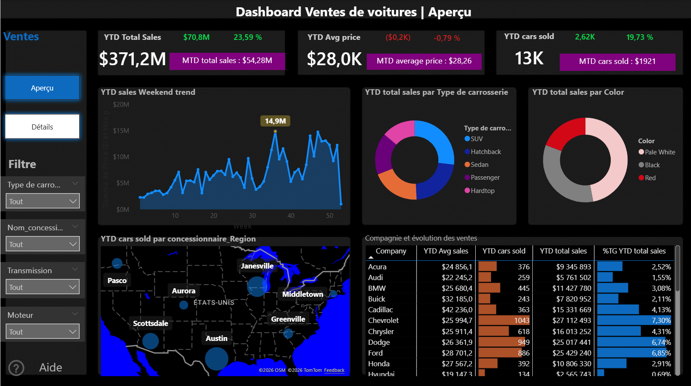
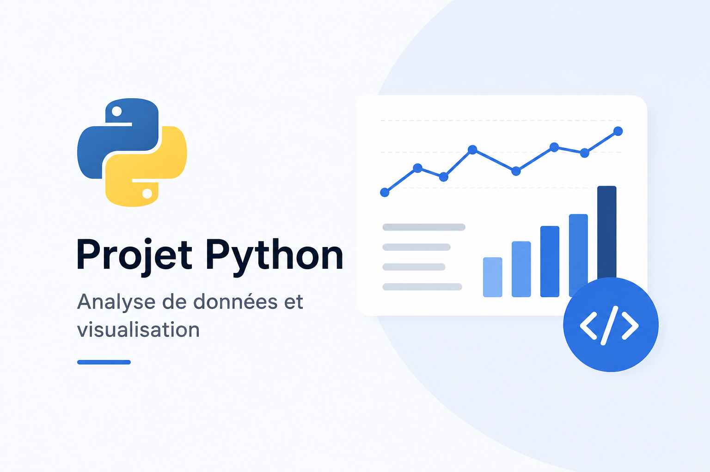
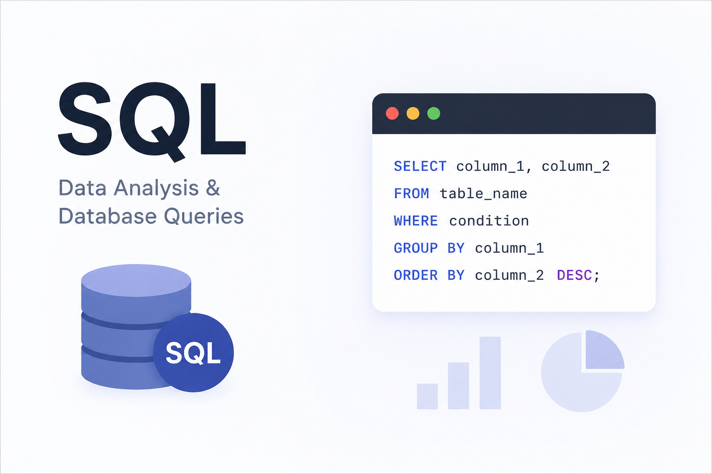
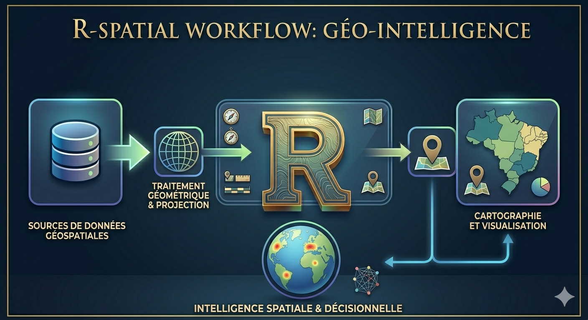
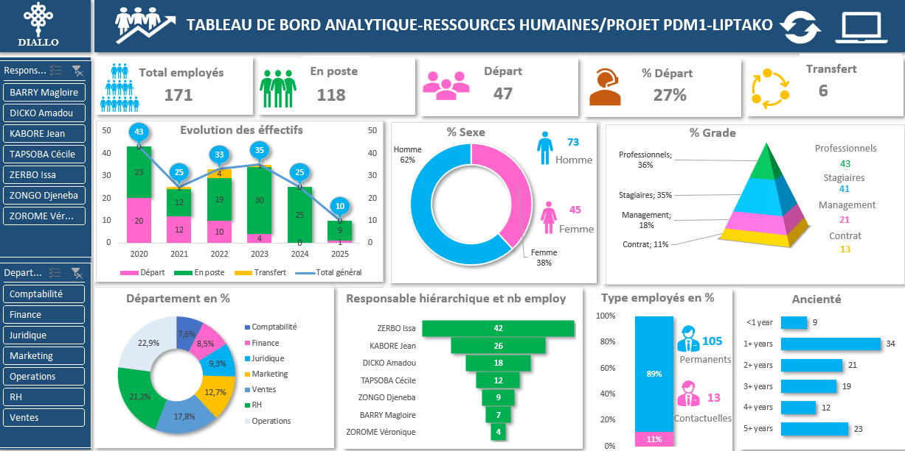
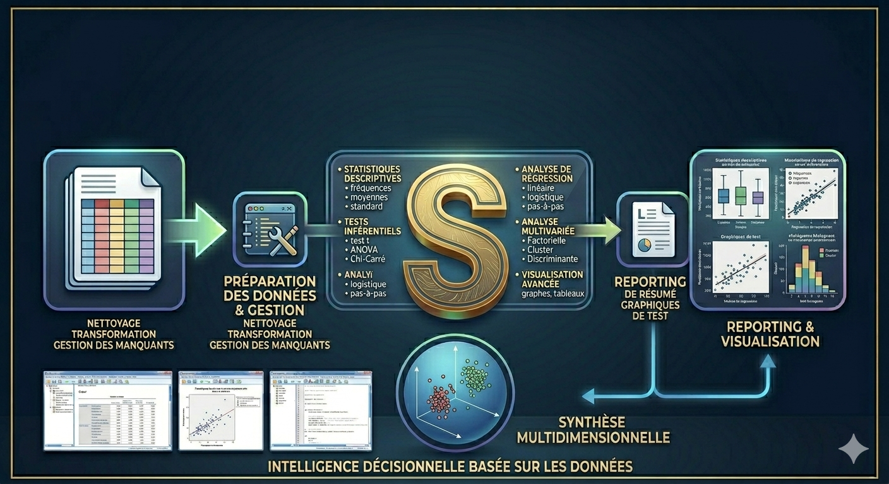

Hello, my name is Hama DIALLO
I'm a
I help organizations transform data into actionable insights, improve decision-making, and maximize project impact through data analytics, MEAL systems, and interactive dashboards.
Download CVAbout Me
I'm Hama DIALLO and Data Scientist
With 5 years of experience in data science and analysis, I support NGOs, international organizations, private companies and public institutions in transforming their data into strategic decisions. Expert in Python, R, SQL, Power BI, Excel and SPSS, I design dashboards, MEAL systems and advanced statistical analyses that maximize project impact. Available for freelance missions, salaried positions or consulting — I bring rigor, method and concrete results wherever data can make a difference.
Birthday : 03 Avr 1997
Age :
Website : hamadiallo789-beep.github.io/portfolio
Email : hamadiallo789@gmail.com
Degree: Master
Phone : +226 72 67 92 81
City : Ouagadougou
Freelance : Available
Python
R
Excel
SQL
Power BI
SPSS
Education
2023 - 2025
Master Professionnel en Gestion des Projets
Formation axée sur la planification, le suivi-évaluation et la gestion stratégique des programmes de développement.
2022 - 2024
Master Recherche en Statistique et Analyse Économique
Formation avancée en statistiques, économétrie, modélisation des données et méthodes quantitatives pour l'analyse économique.
2017 - 2020
Licence en Économie de l'Environnement et du Développement Durable
Fondamentaux en économie de l'environnement, politiques de développement durable et analyse quantitative appliquée aux ressources naturelles.
Experience
Jan 2025 - Déc 2025
Chargé de Programme — Association TREMPLIN
Planification et mise en œuvre du dispositif de suivi-évaluation, collecte et analyse des données, suivi des indicateurs de performance, gestion des bases de données, rapports d'activités et missions de supervision terrain.
Jan 2022 - Déc 2024
Chargé MEAL — Elite Afrique
Mise en œuvre du système MEAL, assurance qualité des bases de données, rapports mensuels/trimestriels/annuels, supervision des équipes terrain, formation sur les outils de collecte (KoboToolbox, ODK, SurveyCTO, Epi Info) et gestion des plaintes.
Juin - Juil 2024
Consultant — Évaluation Projet Beog-Yinga (ONG-ARFA)
Conception du questionnaire sur KoboToolbox, recrutement et formation des enquêteurs dans les régions Est (Bilanga) et Nord (Gourcy), supervision terrain dans 14 villages, traitement et analyse des données, rédaction du rapport et présentation des résultats.
Services
Data Scientist
Building predictive models and machine learning pipelines to extract value from complex datasets.
Data Analysis
Transforming raw data into meaningful insights that support strategic decisions.
Dashboard Development
Designing interactive Power BI dashboards to monitor KPIs and project performance in real time.
MEAL Systems
Setting up monitoring, evaluation, accountability and learning systems for development programs.
Data Visualization
Creating compelling charts, maps and infographics that communicate data stories clearly.
Statistical Analysis
Applying rigorous statistical methods (R, SPSS, Python) to ensure valid and reliable findings.
Portfolio
My Last Projects :

Car Sales Dashboard
Interactive dashboard analyzing $371M in car sales — KPIs, geographic map, trends and detailed table.
View Project
ETL Pipeline & Data Analysis
Complete pipeline: Extraction, Cleaning, Processing, Analysis and Interpretation using NumPy, Pandas, Matplotlib, Seaborn and SciPy.
View on GitHub
SQL Project & Data Architecture
End-to-end SQL project on COVID-19 data: table creation, database design, schemas, normalization, queries and data deployment for BI reporting.
View on GitHub
R Spatial & Geo-Intelligence
Complete data analysis and cartography with R: geospatial data processing, geometric projections, mapping and spatial decision intelligence.
View on GitHub
HR Analytics Dashboard — Liptako Project
Advanced Excel analysis: HR dashboard tracking 171 employees — advanced functions, PivotTables, PivotCharts, Macros, PowerQuery and PowerPivot.
View on Microsoft OneDrive
Agroecology Project Evaluation — Burkina Faso
Advanced statistical analysis with IBM SPSS for a North and East Burkina Faso agroecology project: descriptive stats, inferential tests, regression, multivariate analysis and reporting.
View on GitHubContact Me
Have You Any Questions ?
I'M AT YOUR SERVICES
Call Us On
+226 72 67 92 81
Office
Ouagadougou
hamadiallo789@gmail.com
Website
www.hamadiallo.com